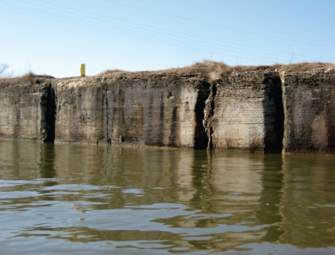

Potential for Interbasin Invasive-Species Movement by way of the Groundwater Pathway near Lemont, Illinois

There is potential for invasive species to move from the Des Plaines River (Mississippi River basin) to the Chicago Sanitary and Ship Canal (Great Lakes basin) through the network of fractures in the bedrock between these two water bodies. This investigation focused on the ability of these fractures to transport Asian carp egg and larvae from the Des Plaines River into the Chicago and Sanitary Ship Canal above the electric barrier which currently prevents their movement into Lake Michigan.
The geology, hydrology, sediment, and water quality of the Des Plaines River, I&M Canal, and Chicago Sanitary and Ship Canal and the aquifer between these water bodies were characterized along a 19-mile reach of interest. Acoustic data and a field examination of the bedrock identified the geometry of the Chicago Sanitary and Ship Canal and areas with fractures that could possibly transport water from the Des Plaines River or I&M Canal to the Chicago Sanitary and Ship Canal by way of the groundwater system. The areas with fractures were further investigated by collecting sediment, geologic, and hydraulic data that could indicate a connection between the surface-water bodies and the groundwater. Water-level and water-quality were collected from wells, the Des Plaines River, and the Chicago Sanitary and Ship Canal for several months to determine how the water moved through the area over a range of hydraulic conditions. The final test to assess the connections between these water bodies was completed by injecting dye into the Des Plaines River and tracking it to see if it traveled through the groundwater into the observation wells or into Chicago Sanitary and Ship Canal.
This project helps to understand the risk of Asian carp moving from the Mississippi River basin to the Great Lakes basin through the groundwater connections near Lemont, Illinois.
Findings will be available in the USGS report to be published online in Spring 2014.
A USGS Scientific Investigations Report on this project will be available online in Spring 2014.
Bob Kay, rtkay@usgs.gov
Illinois Water Science Center
815-756-9207